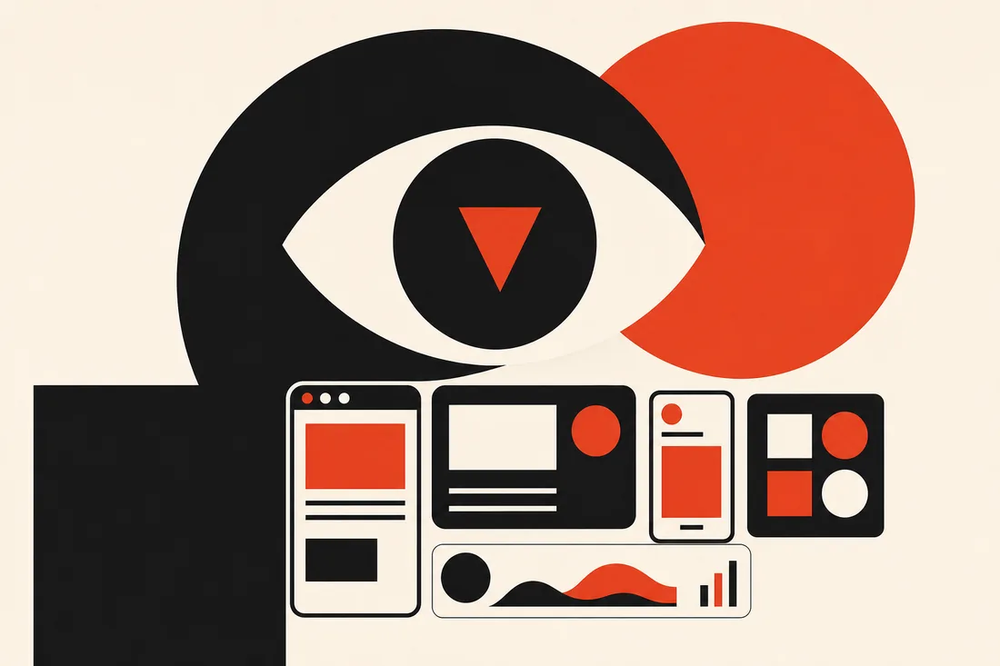
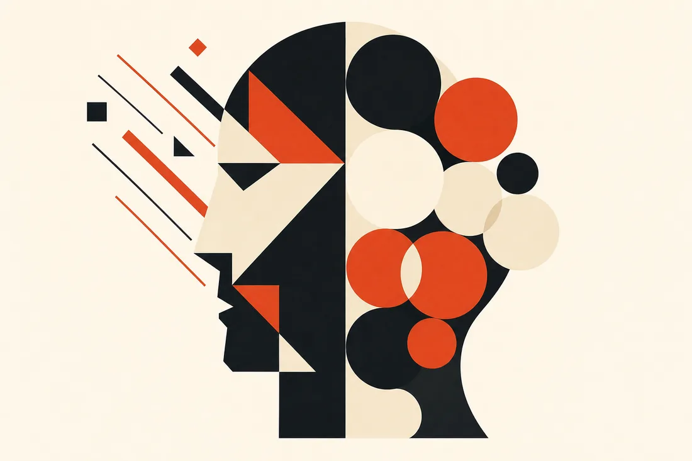
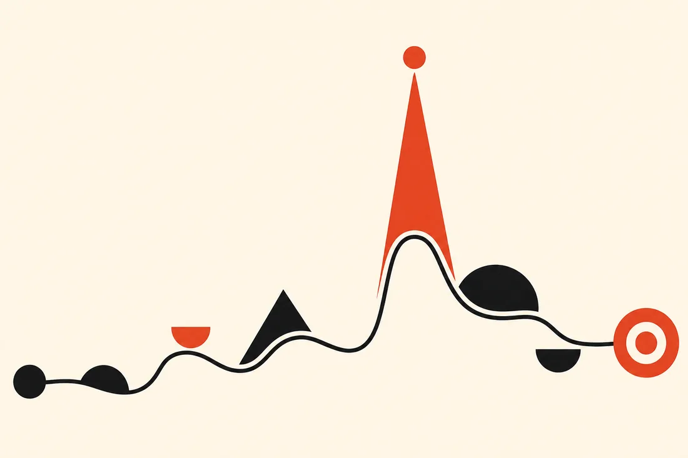
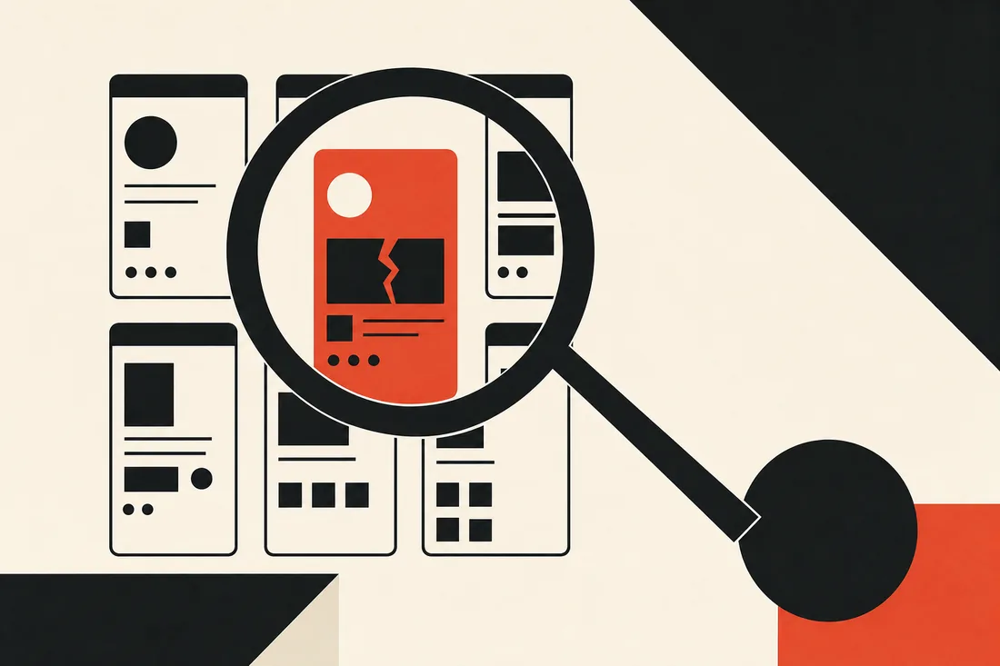
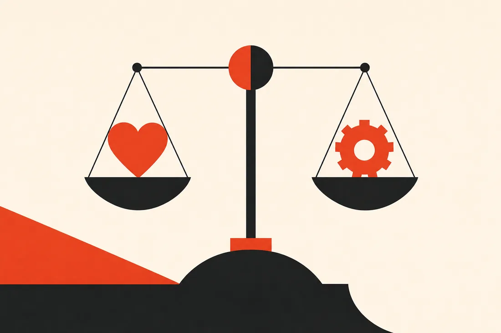
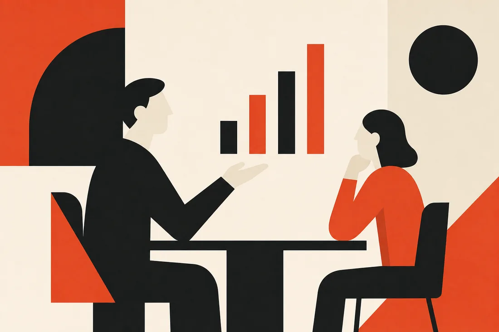

A 5-module, self-paced course built from the behavioral-science canon (Kahneman, Fogg, Cialdini, Eyal, Nielsen Norman, Brignull) — structured on the Growth.Design Product Psychology Masterclass curriculum, taught with real mental models instead of course marketing.


Kahneman's Thinking, Fast and Slow splits cognition into two systems. System 1 is fast, automatic, emotional, pattern-matching — it runs almost all of your product's moment-to-moment decisions (which button to tap, whether to trust a screen). System 2 is slow, effortful, deliberate — it only engages when System 1 flags something as unusual, risky, or worth real thought.
Product implication: if a screen requires System 2 thinking to complete a routine task, you've made a design error, not a user-education problem.
Behavior happens when three things converge at the same moment: B = MAP
If a user doesn't act, one of the three is missing — and the highest-leverage fix is almost always Ability (make it easier), not motivation (nagging harder).
Eyal's Hooked describes how habit-forming products close a loop: Trigger → Action → Variable Reward → Investment.
Ethical flag: this same loop underlies both genuinely useful habits (language learning) and manipulative engagement traps (infinite scroll). Module 5 gives you the test to tell them apart.
Duolingo's daily streak counter is one of the most analyzed patterns in consumer product design. Here's how the three Module 1 models stack on top of each other to explain why it works so well — and where it edges into manipulation.
Pick one screen or flow in something you're actually working on (Toqi, the karate site, anything real) where users drop off or hesitate.
"Nothing in life is as important as you think it is while you are thinking about it."
Daniel Kahneman — on why System 2 overweights whatever is currently in focus

Jakob Nielsen's 10 usability heuristics are the fastest way to grade any screen without user testing. The five that catch the most real-world gaps:
Every extra decision, field, or unfamiliar pattern taxes a limited pool of mental effort (working memory). Friction isn't always bad — sometimes it's a deliberate System-2 speed bump (Module 1). The skill is telling accidental friction (a gap to close) from intentional friction (a safeguard to keep).
Diagnostic question: does this step protect the user or the business from a real risk? If no — it's a gap.
Six principles that predict what moves people to say yes — useful both for spotting why an experience under-converts and for designing an ethical fix:
For any screen or flow, run this 4-step grading pass:
This is the reusable diagnostic — Module 3 uses it at the journey level, Module 4 uses it to justify a fix to stakeholders.
Before Airbnb added Instant Book, every reservation required the host to manually approve a request — often taking 24 hours. Here's how a B-I-A-S pass would have flagged the exact gap, years before the fix shipped.
Take the same screen from Exercise 1, or a new one.

People don't remember an experience as an average of every moment — they remember (and judge) it almost entirely by its most intense point (peak) and its final moment (end). Everything in between is compressed or forgotten.
Product implication: you get outsized ROI from investing in one great peak moment and a strong closing moment — polishing the entire middle of a journey evenly is often wasted effort.
Common failure modes when mapping a journey:
Mailchimp famously plays a small animation of its mascot Freddie giving a high five right after a user successfully sends their first campaign. On paper it's a trivial moment — the email already sent, nothing functional depends on it. Here's why it's a deliberate peak-end investment, not decoration.
Pick a journey you know well (onboarding, first purchase, first week of use).

"I think this looks better" loses to "users hesitate here because of X heuristic, and here's how competitor Y solved it." Naming the specific mechanism (loss aversion, recognition over recall, peak-end) converts a taste argument into a falsifiable claim — which is exactly what a skeptical stakeholder can actually engage with.
People weigh losses roughly 2x more heavily than equivalent gains (Prospect Theory). "This change adds 3% conversion" lands weaker than "this friction point is currently losing you 3% of every cohort." Same fact, framed as a loss — more persuasive, and also more honest about the status quo cost of inaction.
For answering any pushback on a design decision:
A common real pitch scenario: a stakeholder watches a usability session where a user misses a CTA, and concludes "make the button bigger." That's a plausible-sounding but often wrong diagnosis. Here's the 3-step response in practice.
Think of a real pushback you've gotten (or expect to get) on a design decision.

Two axes decide whether a persuasive technique is ethical: does it serve the user's genuine interest, and is it transparent (would the user be upset to learn how it works)?
Named, catalogued manipulation techniques — knowing the names makes them instantly spottable:
LinkedIn was sued (and settled) over emails sent to a user's contacts that implied the user themselves had invited them, driven by an opt-in flow that imported and used a user's entire address book without clear disclosure. Full 5-point audit:
Pick one persuasive technique already in a product you work on (a default, an urgency message, a nudge).
"AI output is only as good as the direction you give it, and your direction is only as good as your judgment." The tool changed. The judgment is still yours to build.
Growth.Design — reframing why psychology literacy still matters in the AI era
All 5 apply-exercise answers and checklist state are saved in this browser's local storage — nothing leaves your device. Revisit any module to edit.